4.21 Energy decomposition analysis¶
Multiwfn manual, p.913–930. Images:
../imgs/.
record element names in the .xyz trajectory file rather than atom names, otherwise Multiwfn may incorrectly guess elements, making amIGM analysis wrong. Note that after Multiwfn finish loading input file, formula of the system will be shown, from which you can easily check if every element has been corrected determined.
Tip: Common practice of preparing trajectory file for studying ligand-protein interaction via amIGM
First, perform NPT simulation for the whole complex in a solvated box to make it sufficiently equilibrated, then perform NVT simulation for at least 1 ns while keeping ligand fixed, at least 500 frames should be saved. Then use VMD to extract a cluster containing the ligand and all closely contacted residues and save the trajectory of this part as a .xyz file. You can use the selection "resname MOL or protein same resid as within 3.5 of resname MOL" to extract the cluster, where MOL is residue name of the ligand. Next, in the amIGM analysis, you should define two fragments, the first one is the ligand, and the other one contains all other atoms. A full example of generating the .xyz trajectory file for analyzing ligand-protein interaction for aNCI analysis is given in my blog article http://sobereva.com/591, which is also fully suitable for amIGM analyses.
4.21 Energy decomposition analysis¶
Aside from the examples given in this Section, Multiwfn is also able to perform the so-called simple energy decomposition, see Section 4.100.8 of example.
4.21.1 Examples of energy decomposition analysis based on forcefield (EDA-FF)¶
In this section I will illustrate how to perform energy decomposition analysis between specific fragments based on classical forcefield, this method will be referred to as EDA-FF. Please carefully read Section 3.24.1 first to gain basic knowledge about the underlying ideas and implementations of EDA-FF. If you have carefully read the examples below, you should be able to easily apply this method onto various kinds of systems.
More in-depth discussions can be found from my blog article "Using Multiwfn to perform energy decomposition analysis based on forcefield" (in Chinese, http://sobereva.com/442).
If EDA-FF analysis is utilized in your work, please cite this article: Mat. Sci. Eng. B, 273, 115425 (2021) DOI: 10.1016/j.mseb.2021.115425, in which I briefly described EDA-FF and employed it in studying interaction between cyclo[18]carbon and graphene
4.21.1.1 Example 1: Water dimer
As first example, we perform the EDA-FF based on AMBER forcefield for a very simple system, water dimer, whose most stable geometry is shown below
Relevant files The related files have been provided in "examples\EDA\EDA_FF\waterdimer" folder, as shown below:
-
dimer.mol: The .mol file of water dimer containing its optimized geometry at B3LYP-D3(BJ)/6-311G** level, which is very reliable for optimizing molecular clusters. Note that in this file, the atomic sequence is O1 H2 H3 O4 H5 H6
-
water.fchk: The .fchk file produced by optimization task of water monomer at B3LYP-D3(BJ)/6-311G** level
-
mollist.txt: Molecular list file corresponding to the water dimer
- water.txt: Molecular type file of water monomer As you can see, the content of mollist.txt is simply
water.txt 2
corresponding to the fact that the water dimer has two water molecules, which are described by the water.txt in current folder.
The content of water.txt is
OW -0.737121
HW 0.368560
HW 0.368560
indicating that the oxygen and hydrogens in the water have atom type of OW and HW, respectively. The second column is atomic charges evaluated by Merz-Kollman (MK) method.
Detail of molecular type file Here I describe how the molecular type file water.txt was constructed. The atom types can be manually assigned according to practical chemical environment of the atoms and definition of atom types in the forcefield original paper, but this process is troublesome if there are lots of atoms in a molecule. Therefore, here I show how to use the popular GaussView to automatically assign the atom types. Load the water.fchk into GaussView, click the icon with bold A letter to enter "atom list editor", then click the icon with bold orange M letter to show atom types, then click the title of "AMBER Type" column twice, the current status of the window should be
Then click "File" - "Export Data", save the file as water.txt. Next, via column mode of advanced
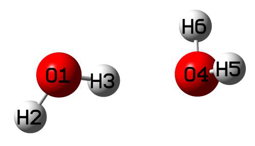
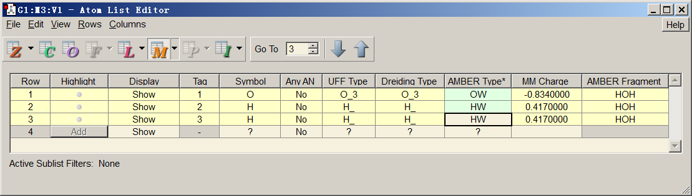
text editor such as Ultraedit, delete all columns except the "AMBER Type" column, and then delete the first row in the file. Now, only atom types of all atoms are presented in the water.txt. After that, calculate MK (or CHELPG) charges based on the water.fchk using subfunction 13 (or 12) of main function 7 (you can consult the example in Section 4.7.1), then copy the outputted charges from screen (or from the exported .chg file) as the second column of the water.txt. At this point, preparation of water.txt is finished.
Perform analysis Now, we start to perform the EDA-FF analysis. Copy the water.txt to current folder, then boot up Multiwfn and input
dimer.mol // The file containing dimer structure information (you can also use other formats containing the geometry information as input file, such as the .fch file produced during optimization task of the dimer)
Multiwfn session
- 21 — Energy decomposition analysis
- 1 — Energy decomposition analysis based on forcefield
- 3 — Load atom types and atomic charges mollist.txt
Multiwfn session
- 2 — Define fragments
- 2 — Two fragments will be defined
- 1-3 — The atomic indices of the fragment 1
- 4-6 — The atomic indices of the fragment 2 If you want to check if atom types and charges of all atoms in current system have been set up properly, you can choose option 4, the output is
*** Fragment 1:
Atom: 1(O ) Charge: -0.737121 Type: OW
Atom: 2(H ) Charge: 0.368560 Type: HW
Atom: 3(H ) Charge: 0.368560 Type: HW
*** Fragment 2:
Atom: 4(O ) Charge: -0.737121 Type: OW
Atom: 5(H ) Charge: 0.368560 Type: HW
Atom: 6(H ) Charge: 0.368560 Type: HW
It is clear that the atom types and charges are all correctly assigned.
Now select option 1 to start the EDA-FF analysis, the result shows up immediately on screen:
Contribution of each atom in defined fragments to overall interfragment interac
tion energies:
Atom 1(O ) Elec: 12.53 Rep: 3.85 Disp: -2.21 Total: 14.17
Atom 2(H ) Elec: -6.24 Rep: 0.00 Disp: 0.00 Total: -6.24
Atom 3(H ) Elec: -16.87 Rep: 0.00 Disp: 0.00 Total: -16.87
Atom 4(O ) Elec: -23.52 Rep: 3.85 Disp: -2.21 Total: -21.88
Atom 5(H ) Elec: 6.47 Rep: 0.00 Disp: 0.00 Total: 6.47
Atom 6(H ) Elec: 6.47 Rep: 0.00 Disp: 0.00 Total: 6.47
Interaction energy components between all fragments:
Electrostatic Repulsive Dispersion Total
Frag 1 -- Frag 2: -21.15 7.71 -4.43 -17.87
The units in the output are all kJ/mol. The above information shows that the total interaction energy between the two water molecules is -17.87 kJ/mol, which is close to the result -20.58 kJ/mol obtained by highly accurate level CCSD(T)/CBS (see original paper of the S66 weak interaction test set, J. Chem. Theory Comput., 7, 2427 (2011)). Although the given result has some error, at least it is adequate for qualitative discussion purposes. The above data also indicates that electrostatic interaction (-21.15 kJ/mol) has a decisive contribution to the binding energy between the two waters, obviously the main essence of general hydrogen bond is dominated by electrostatic interaction. Dispersion interaction also contributes to the binding, but the magnitude is relatively minor. The exchange-repulsion effect (7.71 kJ/mol), to some extent, offsets the attractive interaction due to electrostatic and dispersion effects.
In the original text of the S66 test set, the ratio of the dispersion interaction energy to the electrostatic interaction energy of water dimer given by the very ideal DFT-SAPT method is 0.29, which is qualitatively consistent with the value yielded by EDA-FF (4.43/21.15=0.21). Therefore, with the very simple water dimer as instance, it can be seen that as long as the choice of forcefield and atomic charges are suitable, the result of EDA-FF is generally reliable. For some systems, the total interaction energy calculated by forcefield is not quite close to that evaluated by reliable quantum chemistry method, but even so, in general the ratio between various physical components provided by the EDA-FF is still meaningful. In my view of point, it is not a bad idea to
approximately estimate electrostatic interaction energy (\(\Delta E^{ele}\)) via multiplying the total interaction energy (ΔEtot) obtained using quantum chemistry method by the ratio of the ΔEele and ΔEtot that evaluated by proper forcefield.
The above output also shows contribution of each atom to the total interaction between all the defined fragments, so that you can easily recognize which atoms have a critical impact on the interfragment interaction. The sum of all atomic contributions is equal to the total interaction energy (if the system only has two atoms A and B, and each one is defined as a fragment, then the contribution of atom A will be half of the interaction energy between A-B). From the data given above, it can be seen that influence of each atom is not negligible. After all, the distance between the atoms in the system is not far. The most important contribution to the attraction is the electrostatic interaction of the O4 atom (-23.52 kJ/mol), this result is easy to understand since O4 is the acceptor atom of H-bond. The H3, which directly acts with O4 to form the H-bond, also contributes greatly to the binding (-16.87 kJ/mol) due to significant electrostatic effect. The data shows that only oxygen atoms have nonvanishing repulsion and dispersion terms, this is because the parameters of van der Waals potential of atom type HW is zero, hence HW atoms only behave as point charges to exhibit electrostatic effect.
Interatomic interaction If you choose option -3 once to switch its status from the default "No" to "Yes", then during EDA-FF analysis via option 1, the program also outputs distance (Å), interaction energy (kJ/mol) and its components of each atomic pair to interatm.txt in current folder. The file content of present example is
******* Between fragment 1 and fragment 2:
Atom_i Atom_j Dist(Ang) Electrostatic Repulsive Dispersion Total
1 4: 2.873 262.78 7.71 -4.43 266.05
1 5: 3.176 -118.86 0.00 0.00 -118.86
1 6: 3.176 -118.86 0.00 0.00 -118.86
2 4: 3.346 -112.79 0.00 0.00 -112.79
2 5: 3.762 50.16 0.00 0.00 50.16
2 6: 3.762 50.16 0.00 0.00 50.16
3 4: 1.916 -197.02 0.00 0.00 -197.02
3 5: 2.312 81.64 0.00 0.00 81.64
3 6: 2.312 81.64 0.00 0.00 81.64
From the above data, we can find that the interaction energy between each pair of atoms is very large, which mainly comes from electrostatic interaction. For example, since the charges of the two oxygen atoms O1 and O4 are large and have the same sign, the electrostatic mutual exclusion energy is as high as 262.78 kJ/mol. The binding energy between the fragments appears to be orders of magnitude far less than the above values, this is because when interaction energy between the fragments is calculated, the electrostatic interactions of the atomic pairs are largely positively and negatively offset.
4.21.1.2 Example 2: Circumcoronene-Cytosine-Guanine trimer
In the L7 weak interaction test set given in J. Chem. Theory Comput., 9, 3364 (2013), a system C3GC is a trimer consisting of circumcoronene (hereinafter abbreviated as C3), guanine (G) and cytosine (C). The geometry has been optimized by the authors at TPSS-D/TZVP level, as shown
below. The GC base pair has formed triple H-bonds, and it is physically adsorbed on the C3 via π-π stacking interaction.
In this section, we will perform EDA-FF analysis on this system based on the AMBER force field. The relevant files are provided in the "examples\EDA\EDA-FF\C3GC" directory.
Preparation works Notice that Multiwfn can perform EDA-FF only when atomic indices in any molecule type are contiguous. Otherwise, the atomic charges and types cannot be set for each atom in the system through the molecular list file and molecule type files. The structure file given in the supplementary material of the L7 test set is C3GC.xyz. This file cannot be directly used because the atomic indices in each monomer are not contiguous. One of the simplest way to judge if the atomic indices are contiguous is as follows: First load C3GC.xyz into Multiwfn, use subfunction 2 in main function 100 to convert it to C3GC.pdb (we do the conversion because GaussView does not support .xyz
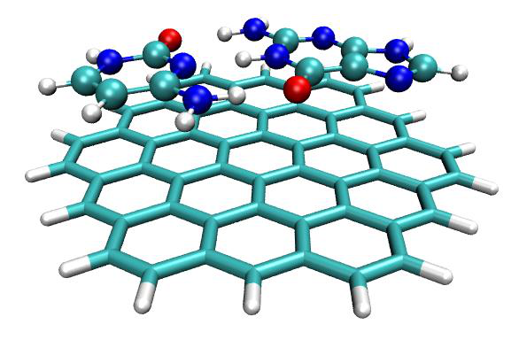
format), then load this pdb file into GaussView, right click on arbitrary atom in an arbitrary molecule (e.g. atom C5), choose "Select Fragments of Atom C5" (this option is available since GaussView 6). At this point, all atoms in this molecule are selected as yellow color, then click "Tools" - "Atom Selection". As can be seen in the screenshot below, the indices displayed in the text box are 5-9, 13-17, 19, 25-29, clearly the atom indices are not contiguous and should be rectified.
The easiest way of making atom indices contiguous in each molecule is entering "Atom list editor" of GaussView, then select "Edit" - "Reorder" - "All Atoms (Except the First) by Bonding", after that the atom indices are reordered according to connectivity, and you will see the atom indices in each monomer have become contiguous, as shown below. Now save this structure to C3GC.pdb to replace the old one.
Then we copy each monomer from the trimer to individual GaussView window, save them to respective .gjf files, change the keyword to "B3LYP/6-311G**" and use Gaussian to run them, then calculate MK charges by Multiwfn based on the resulting .fch files. Also, we make use of GaussView to determine atom types for each monomer. Finally, combine the atom types and charges as single file for each monomer, then we have the C.txt, G.txt and C3.txt, which have already been provided in "examples\EDA\EDA-FF\C3GC" directory.
Finally, create a molecular list file mollist.txt (other name is also acceptable), the content is actual paths of C.txt, G.txt and C3.txt as well as the number of corresponding molecules, notice that
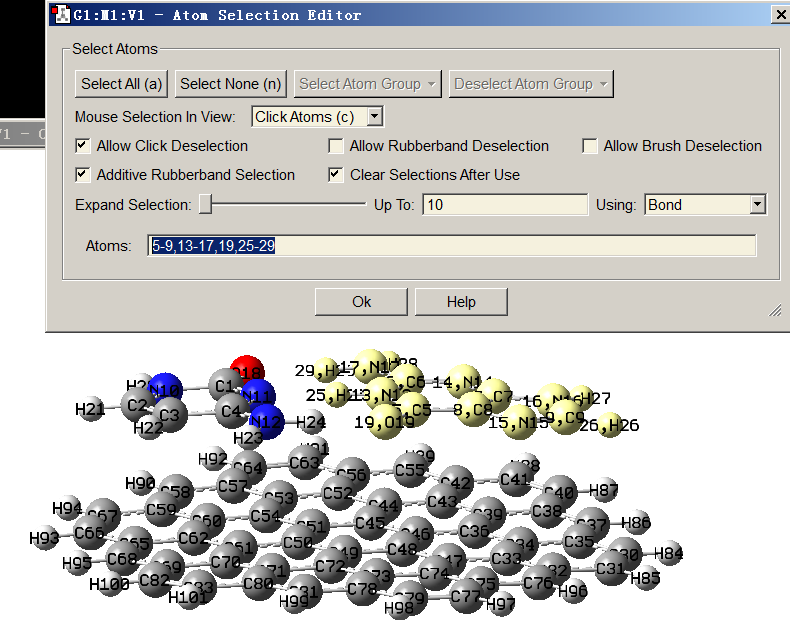
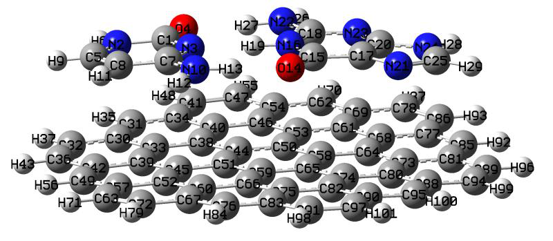
the order of the file paths must be exactly in line with the molecule order in the geometry provided in G3GC.pdb. Clearly, the content of mollist.txt should be (all the molecule type files are assumed to be placed in C:)
C:\C.txt 1
C:\G.txt 1
C:\C3.txt 1
Start analysis All preparation works have been completed, now we start the EDA-FF analysis. Boot up Multiwfn and input
Multiwfn session
- C3GC.pdb 21 — Energy decomposition analysis
- 1 — EDA-FF 3
- Load atom types and charges mollist.txt — Input actual path of mollist.txt
- 2 — Define fragments
- 3 — Three fragments will be defined
- 1-13 — Atom indices in fragment 1, namely cytosine (C)
- 14-29 — Atom indices in fragment 2, namely guanine (G)
- 30-101 — Atom indices in fragment 3, namely C3 Select option 1 to carry out the EDA-FF calculation, the results are as follows (atomic contribution part is ignored)
Electrostatic Repulsion Dispersion Total
Frag 1 -- Frag 2: -120.98 60.26 -45.54 -106.27
Frag 1 -- Frag 3: 1.88 44.86 -94.69 -47.95
Frag 2 -- Frag 3: 0.71 62.08 -132.62 -69.84
The data shows that the G-C binding is very strong, reached as high as -106.27 kJ/mol, mainly because the electrostatic component is very large (-120.98 kJ/mol), which is the consequence of the formation of the three pairs of H-bonds between the G and C. The total interaction energy between C3 and G (-47.95 kJ/mol) as well as between C3 and C (-69.84 kJ/mol) are not small, mainly due
to the significant π-π stacking between them. Since the nature of π-π stacking is purely dispersion effect, it can be seen that the dispersion interactions of C3-C and C3-G are very strong (-94.69 and -132.62 kJ/mol, respectively), which are much higher than that between G-C (-45.54 kJ/mol). Since C3 is essentially a finite graphene sheet, its interaction region with G and C is obviously nonpolar (i.e. the atomic charges are very small), so the electrostatic component in C3-C and C3-G interactions is negligible (merely 0.71 and 1.88 kJ/mol, respectively).
I also calculated binding energies between G-C, C3-G and C3-C using dimer models at B3LYP-D3(BJ)/6-311+G** level, which is very robust for evaluating weak interactions, the results are
G-C (Frag 1 - Frag 2)：-143.97 kJ/mol
C3-C (Frag 1 - Frag 3)：-56.69 kJ/mol
C3-G (Frag 2 - Frag 3)：-76.27 kJ/mol
For C3-C and C3-G, it can be seen that the results calculated by AMBER forcefield and that by quantum chemistry method are very close, but the quantitative difference for G-C is quite conspicuous. This observation manifests the limited quantitative accuracy of forcefield when it is applied to the weak interactions with great strength. However, in this case, if we only focus on the
ratio between various physical components, the result of EDA-FF is still useful and will not cause evident misleading conclusion.
Coloring atoms according to contribution to interaction energy By making use of .pqr file format, atomic properties can be easily visualized by coloring atoms via different colors in VMD visualization program, this strategy is detailedly introduced in Section 4.A.10. Obviously, if atomic contributions to interaction energy between fragments are stored into the .pqr files, then the importance and role of each atom will be able to be vividly shown in a graph. Similar idea is also employed in the IGM analysis, as illustrated in Section 4.20.10.
Now we select "-4 Toggle if outputting atom contributions to .pqr files" option in the EDA-FF interface to switch its status to "Yes", then select option 1 to carry out EDA-FF analysis. After the calculation, atmint_tot.pqr, atmint_ele.pqr, atmint_rep.pqr, atmint_disp.pqr and atmint_vdW.pqr appear in the current directory (some of them have been provided in "examples\EDA\EDA-FF\C3GC\pqr"). The data of the atomic charge column in these .pqr files correspond to the contribution of each atom to the total/electrostatic/repulsion/dispersion/vdW interaction energy between the fragments, respectively, and the values are identical to those printed on screen. For example, the value of the atomic charge column of the C1 atom in fragment 1 of the atmint_disp.pqr corresponds to half of the dispersion interaction energy between C1 atom and all atoms of fragments 2 and 3.
We load the atmint_tot.pqr into VMD program, enter "Graphics" - "Representation", coloring the atoms according to the "Charge" property, changing the lower and upper limits of the color scale from the default ones to -50 and 50, respectively. Setting drawing method of the G and C parts as CPK mode (using fragment 0 1 in the "Selected Atoms" box to choose them), and making C3 part displayed in Licorice style (using fragment 2 to choose it). We also set the color scale method to BWR (Blue-White-Red). Finally, the graph will look like below (if you are not familiar with VMD and do not know how to realize these settings in VMD, please consult Section 4.A.10):
Since the current color scale used is Blue-White-Red, the bluer the atom color in the figure, the more negative the atomic contribution to the total binding energy between the trimer (i.e. the more significant the attractive effect); while the redder the atom, the stronger the repulsive effect it
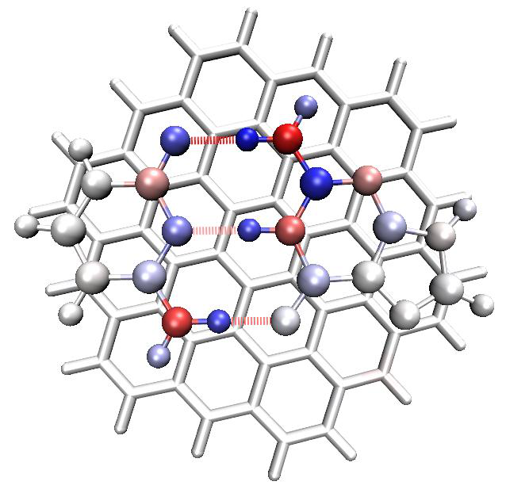
acts. Relatively white atoms only play trivial role on the trimer binding. As can be seen from this figure, the colors of each H-bond acceptor atom and the hydrogen atom directly acting with it are obviously blue, thus they contribute greatly to the stability of the G-C binding. The color of all H-bond donor atoms is red, indicating that their existences are not conducive to the binding, this is because the H-bond donor and acceptor atoms have large magnitude and same sign of atomic charges, therefore there is a significant electrostatic mutual exclusion between them. From the map above, it can also be seen that all atoms of C3 as well as the atoms in the G and C that far away from the hydrogen bonding region only have very light or purely white color, this observation does not imply that they have nearly vanished contributions to the trimer binding, but indicates that their contributions are relatively weak and thus difficult to be revealed under current color scale setting.
Assume that we want to vividly exhibit the dispersion interaction between C3 and GC base pair, then we input below commands in the EDA-FF interface
Multiwfn session
- 2 — Redefine fragments
- 2 — Two fragments will be defined
- 1-29 — Fragment 1, the GC base pair
- 30-101 — Fragment 2, the C3 part
- 1 — Start the EDA-FF calculation Then the following information is shown on screen, the data equals the sum of C3-C and C3-G interaction energies
Electrostatic Repulsion Dispersion Total
Frag 1 -- Frag 2: 2.59 106.94 -227.31 -117.79
In the meantime, four new .pqr files are generated in current folder (they have been provided in "examples\EDA\EDA-FF\C3GC\pqr2" folder). Load the atmint_disp.pqr among them into VMD, coloring the atoms according to the way described above but using color scale of -10 to 10, then select "Display" - "Orthographic" to modify the perspective, you will see
In the above figure, the bluer the atomic color, the greater it contributes to the dispersion interaction between C3 and GC. It can be seen from the figure that each heavy atom in the GC part contributes nearly equally to the dispersion interaction, mainly because they have almost the same vertical distance to the C3 plane and the number of electrons carried by these atoms are not very
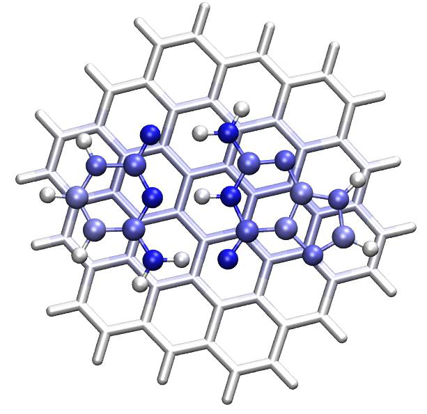
different. The hydrogen atoms in the GC pair contribute very little to the C3-GC dispersion interaction, this is because the hydrogen atoms only have very few numbers of electrons. On the C3 part, the color of the carbons that directly contact the GC pair is light blue, indicating their notable contributions to the dispersion interaction. The color of the C3 atoms that are far away from the GC pair is white, reflecting that their influences on dispersion interaction are negligible (recall the fact that dispersion attraction attenuates sharply with distance, it has 1/\(1/r^6\) asymptotic behavior).
Note: The heavy atoms in the GC pair in the graph above are very blue, while the atoms in the equivalent position of C3 are not so blue, the reason is that: Because there are many atoms in C3, each heavy atom in the GC pair can form dispersion interaction with a large range of C3 atoms, thus the sum of the terms is large. Since the number of atoms in the GC pair is small, each atom of C3 can only interact with relatively few numbers of atoms in the GC pair, so the sum of terms is not large. If you want to make atomic color of the C3 part more prominent, you can set the color scale range of the representation corresponding to the C3 part to a smaller value than the -10~10 we previously used; for example, changing to -6 to 6 will yield satisfactory graph.
About determining binding energy of individual H-bond Some readers may have thought that it would be great if the binding energy of each of the three H-bonds between the G-C could be independently determined. There is no unique way to achieve this goal, since this is equivalent to dividing the system into parts and must not be free of artifacts. A seemingly easy way to realize this purpose is to directly define the donor and acceptor parts of a H-bond as two fragments. For example, let us examine the H-bond of N10-H13...O14, we input.
Multiwfn session
- 2 — Redefine fragments
- 2 — Two fragments will be defined
- 10,13 — Atomic indices of donor part of N10-H13...O14
- 14 — Atomic index of acceptor part of N10-H13...O14
- 1 — Perform EDA-FF analysis The result is
Electrostatic Repulsion Dispersion Total
Frag 1 -- Frag 2: 71.27 21.78 -9.40 83.65
Clearly the result is unreasonable, since the total binding energy was predicted to be a positive value! The underlying reason is that the electrostatic interaction is a kind of long-range effect (1/r asymptotic behavior), therefore consideration of other atoms should not be simply ignored. I also attempted to employ other ways to evaluate the N10-H13...O14 H-bond binding energy, although some of them give seemingly acceptable result (for example, summing up atomic contribution of N10, H12, H13 and O14 to total G-C binding energy), unfortunately the relative strength of the three H-bonds cannot be faithfully explained. In my opinion, deriving individual H-bond interaction energy is impossible for this system based on EDA-FF, the reason is that the three H-bonds are too close together and thus the coupling is very strong, the polarization effect is obvious, and meantime resonance-assisted effect is involved in these H-bonds, these factors make the total interaction energy of the three H-bonds very difficult to be reasonably decomposed. However, if there are several H-bonds and the sites are far away from each other, it should be possible to individually evaluate the strength of each H-bond by estimation of interaction energy between the atoms in the corresponding local region.
AFAIK, the best way of determining binding energy of individual H-bond is using atom-in-molecules (AIM) analysis, see Section 4.2.1 for introduction and illustration.
Other aspects It is worth to note that a possibly viable way aside from SAPT to evaluate dispersion interaction energy is employing DFT-D3 dispersion correction using the zero-damping parameters fitted for
exchange-correlation functionals that completely failed to represent dispersion interaction. This strategy has been utilized in the energy decomposition analysis example shown in Section 4.100.8. The DFT-D3 dispersion correction for interfragment interaction energy using zero-damping BLYP functional parameter is shown below
C -- G: -26.65 kJ/mol
C -- C3: -87.78 kJ/mol
G -- C3: -115.10 kJ/mol
It can be seen that the three values are close to the corresponding dispersion interaction energies evaluated by AMBER forcefield (-45.54, -94.69, -132.62, respectively), rendering that using either AMBER forcefield or DFT-D3 to estimate dispersion interaction energy is a reasonable approach.
Using UFF to conduct the EDA-FF analysis is often unsatisfactory. If we do this for present system, the result is
Electrostatic Repulsion Dispersion Total
Frag 1 -- Frag 2: -120.98 848.28 -80.36 646.94
Frag 1 -- Frag 3: 1.88 52.65 -107.41 -52.87
Frag 2 -- Frag 3: 0.71 68.89 -143.58 -73.99
It can be seen that the interaction predicted by UFF for C3-C and C3-G is normal, and the result magnitude is close to that calculated by AMBER, but the interaction energy of G-C is extremely positive, evidently this is completely unreasonable. From the data it is easy to find that the reason is that the exchange-repulsion component is seriously overestimated. This is not an individual phenomenon, but a common phenomenon of UFF, this is why I generally do not recommend performing EDA-FF based on UFF (although optimizing the geometry using UFF prior to the EDA-FF could alleviate this problem).
As mentioned in Section 3.24.1, for very large systems, using the very cheap EEM charges (with parameters fitted for CHELPG charges at B3LYP/6-31G* level) instead of the rigorously derived ESP fitting charges to perform the EDA-FF analysis may be a viable choice; however, my test showed that this treatment can cause remarkable error in electrostatic interaction for present system. The electrostatic interaction energy between G and C evaluated based on EEM charges is merely -74.26 kJ/mol, which is much lower than that evaluated based on MK charges (-120.98 kJ/mol). Therefore, whenever possible, using ESP fitting charges (MK or CHELPG) in EDA-FF analysis is strongly recommended, this is crucial for yielding electrostatic interaction energy with satisfactory accuracy.
4.21.2 Shubin Liu's energy decomposition analysis for ethane rotation barrier¶
The idea and usage of the Shubin Liu's energy decomposition (EDA-SBL) have been described in Section 3.24.2. In this section we carry out EDA-SBL method to study the source of energy different between ethane in optimized eclipsed and staggered conformations. Relevant input and output files have been given in "examples\EDA\EDA_SBL" folder.
First, we optimize ethane in staggered conformation (D3 point group) and in eclipsed
conformation (D3h point group) at B3LYP/def-TZVP level using Gaussian, the latter in fact is a transition state. Then using the geometries to create two Gaussian input files, namely ethane_staggered.gjf and ethane_eclipsed.gjf, respectively. The two files correspond to single point task at B3LYP/def2-TZVP level. As mentioned in Section 3.24.2, the route section contains ExtraLinks=L608 keyword and at the end of the input file there is line -5 indicating that the currently used functional is B3LYP.
Run the two .gjf files by Gaussian to yield ethane_staggered.out and ethane_eclipsed.out, respectively, and then use formchk to convert the resulting .chk files to .fch files.
We first evaluate the energy terms defined by EDA-SBL method for staggered ethane. Boot up Multiwfn and input
examples\EDA\EDA_SBL\ethane_staggered.fch
Multiwfn session
- 21 — Energy decomposition analysis
- 2 — Shubin Liu's energy decomposition examples\EDA\EDA_SBL\ethane_staggered.out Now Multiwfn loads relevant information from the Gaussian output file, and then evaluates the steric term defined by EDA-SBL method. Finally, the EDA-SBL energy components are printed:
E_steric: 64.213411 Hartree
E_electrostatic: -146.114859 Hartree
E_quantum: 2.037465 Hartree
E_total: -79.863983 Hartree
The E_total is identical to the single point energy in the Gaussian output file.
We repeat the analysis for eclipsed ethane, then summarize the data into the table below
Etotal Esteric Eelectrostatic \(E_{quantum}\)
Eclipsed (a.u.) -79.85972 64.21925 -146.10780 2.02883 Staggered (a.u.) -79.86398 64.21341 -146.11486 2.03747 Diff. (kJ/mol) 11.2 15.3 18.5 -22.7
It can be seen that the eclipsed conformation has energy higher than the staggered one by 11.2 kJ/mol, which corresponds to the barrier of C-C single-bond rotation of the ethane. The data implies
that steric effect should be one of the major contributors of the barrier since ΔEsteric is evidently positive. In addition, the fairly large \(\Delta E_{\text{electrostatic}} = 18.5\)=18.5 kJ/mol suggests that the electrostatic interaction is the dominating factor to determine the barrier height. In contrast, the variation of \(E_{quantum}\), which reflects the change in energy purely due to quantum effect, significantly cancels the steric and classical electrostatic terms and thus plays an important role of reducing the barrier.
As you can see on the screen, the EDA-SBL module also prints other intermediate quantities comprising the Esteric, Eelectrostatic and \(E_{quantum}\), such as Pauli kinetic energy, so you can use them to try to analyze the energy difference between the two conformations from more perspectives.
A thorough analysis using the EDA-SBL method for rotation barriers for a series of small organic molecules is presented in J. Phys. Chem. A, 117, 962 (2013), interested users are suggested to read it.
4.21.3 Examples of sobEDA and sobEDAw energy decomposition analyses¶
sobEDA.sh shell script is used to conveniently perform sobEDA and sobEDAw energy decomposition analyses based on Gaussian and Multiwfn. Very detailed introduction and rich application examples are given in http://sobereva.com/soft/sobEDA_tutorial.zip, please carefully check it.
4.21.4 Examples of analysis of atomic contribution to dispersion energy¶
Note: Chinese version of this section is my blog article "Using Multiwfn to graphically exhibit atomic contribution to dispersion energy and dispersion density" (http://sobereva.com/705), which contains more examples and discussion.
In this section, some examples of analysis of atomic contributions to dispersion energy as well as dispersion energy are given. Please carefully read Section 3.24.4 first to gain basic knowledge, and understand how to set “dftd3path” in settings.ini.
4.21.4.1 Investigating dispersion energy contributed by atoms in helicene
and dispersion density
In this example, we examine which atoms have prominent contribution to dispersion energy of 6-helicene. Boot up Multiwfn and input
Multiwfn session
- examples\helicene.xyz — Structure file of 6-helicene
- 21 — Energy decomposition analysis
- 4 — Analysis of atomic contribution to dispersion energy
- 1 — Calculate atomic contributions to dispersion energy for current system Immediately, you will see the following information on screen, which contains total dispersion of present system, which corresponds to DFT-D3(BJ) dispersion correction energy with fitted parameters for B3LYP. Also, atomic contributions to dispersion energy are clearly given.
Total dispersion energy: -74.468 kcal/mol
Atomic contribution to dispersion energy
1(C ) -2.681 kcal/mol
2(C ) -2.072 kcal/mol
3(C ) -2.068 kcal/mol
4(C ) -2.650 kcal/mol
5(C ) -3.432 kcal/mol
[...ignored]
40(H ) -0.569 kcal/mol
41(H ) -0.511 kcal/mol
42(H ) -0.614 kcal/mol
Next, you can input y to export atomdisp.pqr in current folder. Load it into VMD program, in the “Graphics” - “Representation” interface, set “Drawing Method” to CPK, “Coloring Method” to
“Charge”, then in the “Trajectory” panel, set lower and upper limits of color scale to -5.0 and 5.0, respectively. You will see the following map. Since the default color scale used by VMD is red-white-blue, the redder the color in this figure is, the more negative the contribution to dispersion energy of the atom is, and the stronger its dispersion interaction with other atoms.
As can be seen from the figure above, the contribution of carbon atoms to dispersion energy is much greater than that of hydrogen, and the contribution of carbon atoms closer to the center of the helicene is greater. The reason is easy to understand, because the closer the carbon atom is to the molecular center, the richer dispersion interaction it can have with other atoms.
Next, we calculate dispersion density. Select option “2 Calculate dispersion density for current system”, and then choose “Medium-quality grid”, you will find dispdens.cub has been exported to current folder, which is cube file dispersion density (in kcal/mol/Bohr3). Load it into VMD to plot it as isosurface map with isovalue of -0.15 and transparent material, and properly set representation of molecular structure map as licorice, you will obtain the following map. The isosurface distribution in the figure clearly shows that the inner region of the helicene makes a relatively more significant contribution to the dispersion energy than other regions.
It is noteworthy that you can use option 6 in present function to calculate dispersion interaction energy between two arbitrarily defined fragments. For example, to calculate dispersion interaction energy between the two six-membered carbon rings at the two ends of the helicene, after selecting this option, you should input 17-22 and then 11-12,23-26, you will see
Dispersion interaction energy between the fragments: -2.809 kcal/mol
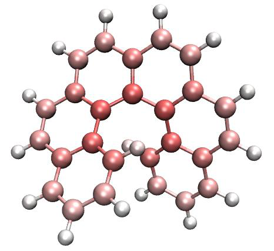
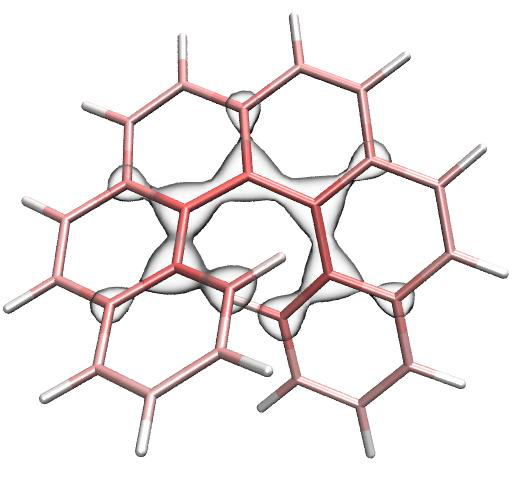
4.21.4.2 Difference in dispersion energy between two conformations of
actos
Actos is a flexible drug molecule, the xyz files of its curly and linear conformations have been provided in “examples” folder as Actos_curly.xyz and Actos_linear.xyz, respectively. In this section, we examine the change in the atomic contribution to the dispersion energy of the curly conformation relative to the linear conformation. Boot up Multiwfn and input
Multiwfn session
- examples\Actos_curly.xyz 21 — Energy decomposition analysis
- 4 — Analysis of atomic contribution to dispersion energy
- 3 — Calculate difference of atomic contributions to dispersion energy between current and another systems
[Press ENTER button] //All atoms in the present system (Actos_curly.xyz) are of interest examples\Actos_linear.xyz [Press ENTER button] //All atoms in Actos_curly.xyz are of interest From output on screen, you can find total dispersion energy of Actos_linear.xyz and Actos_curly.xyz is -57.553 kcal/mol and -69.757 kcal/mol, respectively. It is clear that dispersion interaction of the curly conformation is more significant. Also, the difference in the contribution of every atom to the dispersion energy of the two structures is printed on screen.
Then input y, diffatomdisp.pqr will be generated in the current directory, in which the “charge” property records the dispersion energy contributed by each atom of Actos_curly.xyz minus the dispersion energy contributed by each atom of Actos_linear.xyz, and the atomic coordinates in this file are the same as Actos_curly.xyz. Use VMD to plot molecular structure and color the atoms according to “charge” property based on this file, and set color scale range as -1.0 to 1.0 kcal/mol, then you will get the figure on the left below (the color scale bar is cut out from “Graphics” - “Color” - “Color Scale” panel and then manually made using Powerpoint), the atom on the right figure below is colored according to the element name for comparison (yellow/cyan/red/blue/white is sulfur/carbon/oxygen/nitrogen/hydrogen).
The redder atoms in the left figure above correspond to the atoms that contribute more to the variation of dispersion energy in the process of changing from the linear conformation to the curly conformation. It can be seen that the enhancement of dispersion interaction mainly occurs on the atoms that can become closer to other atoms after the conformation is curled up. The dispersion effect of the white atoms mainly distributed in the corners is not changed notably.
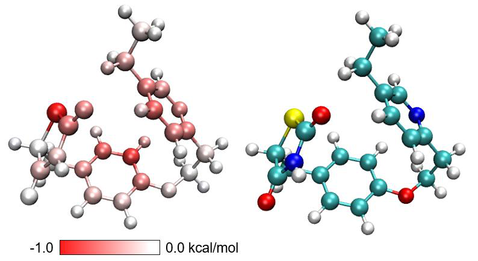
Multiwfn can also generate the difference grid data of dispersion density. Input the following commands in the present function
Multiwfn session
- 4 — Calculate dispersion density difference between current and another system
- [Press ENTER button] — All atoms in the present system (Actos_curly.xyz) are of interest
- examples\Actos_linear.xyz — Another system
- [Press ENTER button] — All atoms in Actos_curly.xyz are of interest
- 3 — High-quality grid
dispdensdiff.cub now is generated in current folder. Plotting it as isosurface map using VMD
with isovalue of ±0.025 via the convenient VMD script described in Section 4.A.14, you will see the following map, the blue color indicates that the isosurface corresponds to negative value. It can be seen that the isosurfaces well highlight the regions with significant enhancement of dispersion energy caused by structural curling.
4.21.4.3 Adsorption of toluene on zeolite
This section illustrates analysis on periodic systems. zeolite.cif and zeolite-mol.cif in “examples” folder are structural files of zeolite and zeolite with an adsorbed toluene, respectively. The latter was optimized by CP2K program at PBE-D3(BJ)/DZVP-MOLOPT-SR-GTH level, and the coordinate of the former was directly extracted from the latter. The two .cif files can be used as input files for analysis of atomic contribution to dispersion energy and calculating dispersion density. Because .cif file provides cell information to Multiwfn, the calculation will be conducted automatically with consideration of periodicity.
First, we perform analysis on zeolite-mol.cif and color atoms according to their contributions to dispersion energy using exactly the same way as described in Section 4.21.4.1, and set color scale to -8.0 to 8.0 kcal/mol, you will obtain the following map. Only the atoms of the adsorbed toluene, which correspond to atoms 217-231 in the file, are shown as large spheres. As can be seen from the figure, silicon atoms contribute the most to dispersion energy, which are much larger than oxygen and carbon atoms, and hydrogen atoms in the toluene contribute the least.
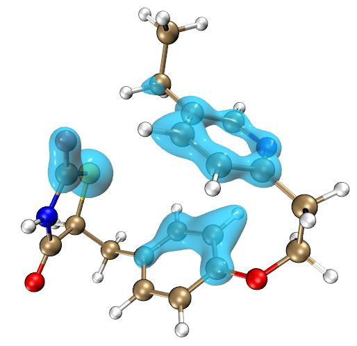
The above figure does not directly show which atoms in the zeolite have the strongest dispersion interaction with the toluene. To clearly study this point, we need to find the difference between the contribution of the zeolite atoms (atoms 1-216) in the zeolite-mol.cif system to its dispersion energy and the contribution of the atoms in the zeolite.cif system to its dispersion energy. This will be done below.
Boot up Multiwfn and input examples\zeolite-mol.cif
Multiwfn session
- 21 — Energy decomposition analysis
- 4 — Analysis of atomic contribution to dispersion energy
- 3 — Calculate difference of atomic contributions to dispersion energy between current and another systems
1-216 // The atoms of interest are those of the zeolite moiety (first 216 atoms) in the current system (zeolite-mol.cif)
Multiwfn session
- examples\zeolite.cif — Another system
- [Press ENTER button directly] — The atoms of interest are all 216 atoms in zeolite.cif, which also correspond to atoms 1-216 in zeolite-mol.cif
y // Export diffatomdisp.pqr in current folder Load the diffatomdisp.pqr into VMD, color atoms by “charge” property, set color scale to -0.8 to 0.8, you will see
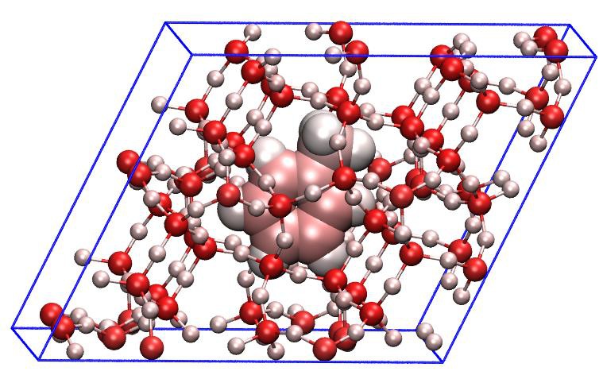
The adsorbed toluene is fully white in the picture above because it is not within the atomic range of interest in the zeolite-mol.cif we defined earlier, so its data is completely zero. The pink or red atoms in the figure suggest that the dispersion energy contributed by the zeolite atoms closer to the toluene changed greatly due to the adsorption. Since the structure of the zeolite moiety in zeolite-mol.cif is the same as zeolite.cif, therefore, the atom colors in the above figure completely reflect the dispersion interaction between the zeolite atoms and the toluene. It can be seen from the figure that the dispersion interaction decays very quickly with distance (known to be 1/\(1/r^6\) decay behavior). Basically, only the zeolite atoms in the closest layer to the toluene have a significant dispersion interaction with it.
The above figure can be changed to the following map, which shows the atoms of zeolite that interact prominently with toluene much more clearly. Specifically, in VMD, three Reps should be created in “Graphics” - “Representation” interface
-
Rep 1: Displays toluene, colored with Name, displayed in Licorice style and BrushedMetal material
-
Rep 2: Displays the entire zeolite using the selection serial 1 to 216, set drawing method to Licorice (with Bond Radius = 0.1), set coloring method to “Charge”, and set material to Transparent
-
Rep 3: Displays zeolite atoms with “charge” property more negative than -0.2 (using selection charge<-0.2), using CPK drawing method and coloring method of “Charge”.
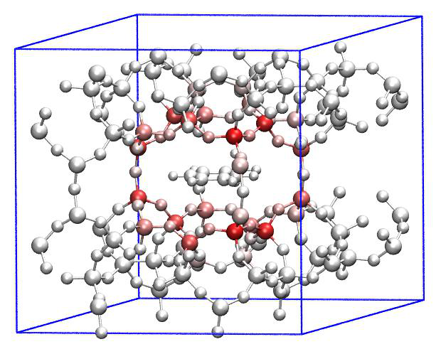